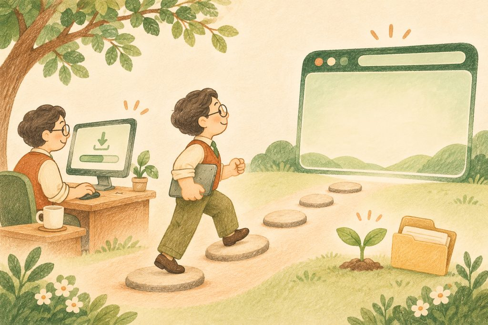
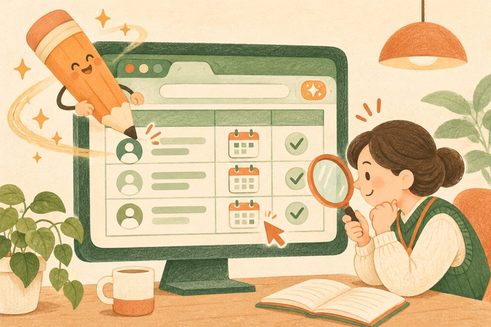
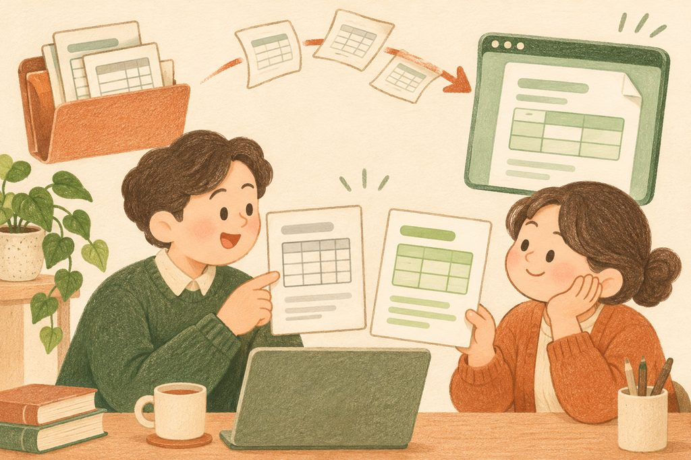

알려 주는 데서, 해 주는 데로
AI 브라우저는 말로 시키면 화면을 직접 누르고 입력하는 브라우저입니다.
어사이드(Aside)는 크롬과 같은 바탕에서 만든 AI 브라우저입니다. 인터넷을 보는 화면에 AI 도우미가 함께 있다고 생각하시면 됩니다. 오른쪽의 「Ask Aside」 측면 창에 할 일을 적으면, AI가 사람처럼 화면의 버튼을 누르고 필요한 내용을 입력합니다.
예를 들어 지도에서 거리를 재거나, 열어 둔 스프레드시트에 표를 채우도록 부탁할 수 있습니다. 어디를 눌러야 하는지 설명만 듣는 것에서 한 걸음 더 나아가, 실제 화면에서 일이 진행되는 모습을 볼 수 있습니다.
“어떻게 하는지 알려 주세요.”
답변을 읽은 뒤, 내가 직접 메뉴를 찾고 셀에 내용을 입력합니다.
“이 화면에서 해 주세요.”
AI가 화면을 조작합니다. 나는 진행 과정을 보고, 끝난 결과가 맞는지 확인합니다.
설치는 가볍게, 익숙한 환경은 그대로
처음부터 모든 설정을 마칠 필요는 없습니다. 공식 사이트에서 내려받아 설치한 뒤, 수업에서는 가져오기는 건너뛰고 무료로 시작했습니다. 필요한 설정은 익숙해진 뒤에 다시 살펴보셔도 됩니다.

설치 순서를 따라가 보세요
단계별 연습번호를 누르면 해당 단계의 설명이 나옵니다. 실제 설치 프로그램을 실행하지 않습니다.
공식 사이트에서 설치하기
공식 사이트에서 설치 파일을 내려받아 실행합니다. 검색 결과의 광고나 출처를 모르는 파일 대신 공식 배포처인지 먼저 확인해 주세요.
- 공식 사이트에서 내려받아 설치합니다.
- 다른 브라우저에서 가져오겠다는 질문은 모두 건너뜁니다. 필요하면 나중에 가져옵니다.
- 요금제는 무료로 시작합니다.
- 마지막 화면에서는 체크 항목을 읽고, 꼭 필요한 것만 남기고 풉니다.
- 기본 브라우저는 아직 크롬으로 둡니다. 어사이드에 익숙해진 뒤 바꾸셔도 늦지 않습니다.
화면이 영어로만 나오면 크롬 번역 기능을 껐다 다시 켜 보세요. 아래 자주 묻는 질문에서도 확인하실 수 있습니다.
평소에는 중간급 모델로
설정에서는 일을 맡길 AI 모델을 고를 수 있습니다. 가장 큰 모델은 사용량을 빨리 씁니다. 평소 업무는 중간급 모델로 시작하고, 어려운 일에만 큰 모델을 사용하는 방식으로 아껴 써 보세요.
어떤 일을 맡기시겠어요?
두 방식 비교중간급 모델로 시작해 보세요
정해진 열에 표를 채우거나 간단한 수식을 넣는 일처럼, 목표가 분명한 일부터 부탁해 보세요. 수업에서는 평소 업무에 중간급 모델을 권했습니다.
확인할 것 · 요청한 셀과 열이 맞는지, 입력 내용이 맞는지 살펴보세요.
모델별 요금·사용 한도는 이 페이지에서 안내하지 않습니다. 실제 선택 화면과 현재 계정의 안내를 확인해 주세요.
이미 쓰는 챗GPT 구독을 연결할 수도 있습니다
설정 › 모델의 「Connect」를 통해 이미 쓰고 있는 챗GPT 구독을 연결하면, 그 구독의 사용량으로 돌릴 수도 있습니다. 기관 계정은 관리자 설정이 필요할 수 있으므로, 연결되지 않을 때는 관리자에게 확인해 주세요.
시트에 명단과 나이를 채워 볼까요?
스프레드시트를 열어 둔 상태에서 오른쪽 측면 창에 아래처럼 적어 보세요. AI가 셀을 직접 고르고 내용을 입력한 뒤, 나이를 계산하는 함수도 넣습니다.
“가상 명단 10명을 이름·생년월일로 만들어 줘”
“C열에 나이를 계산하는 함수를 넣어 줘”
실제 이용인 정보로 시험하지 마세요. 처음에는 아무에게도 해당하지 않는 가상 데이터로 연습합니다. AI가 입력을 마쳐도 바로 사용하지 마시고, 열 위치와 생년월일, 계산 결과를 눈으로 확인해 주세요.

이곳에서 먼저 눌러 보세요
시트 흉내 화면‘명단 만들기’를 누른 다음 ‘나이 계산하기’를 눌러 보세요. 이 연습에서는 사람 이름 대신 가상 번호를 씁니다.
| 행 | A · 이름 | B · 생년월일 | C · 만 나이 |
|---|---|---|---|
| 2 | — | — | — |
| 3 | — | — | — |
| 4 | — | — | — |
첫 단계 · 가상 명단 10개를 만들어 보세요.
연습 수식 예: =DATEDIF(B2,TODAY(),"Y")
실제 시트에 연결하거나 수식을 입력하는 기능은 없습니다. 이 화면은 오늘 날짜를 기준으로 만 나이를 계산해 동작을 보여 줍니다.
잘못 바뀌었을 때는 버전 기록을 확인하세요
고친 곳은 시트의 버전 기록으로 되돌릴 수 있습니다. 잘못된 값을 발견하면 계속 작업을 맡기기보다 잠시 멈추고, 어디부터 달라졌는지 살펴보세요.
폴더 속 한글 파일을 구글 문서로
개별 화면 작업뿐 아니라, PC의 폴더 안에 있는 파일을 다루게 할 수도 있습니다. 「프로젝트 › 기존 폴더 사용」으로 작업할 폴더를 열어 준 뒤, 그 안의 파일에 대해 부탁합니다.
“이 폴더의 HWPX 파일을 구글 문서로 만들어 줘”
작업 중 확인 창이 나타나면 요청한 내용과 맞는지 읽고 허용합니다. 어떤 폴더와 파일을 다루는지 확인한 뒤 진행해 주세요.

현장 시연에서는 어디까지 옮겨졌나요?
시연에서는 본문과 표가 거의 그대로 옮겨졌고, 로고 그림만 빠졌습니다. 이 결과가 모든 파일에서 똑같다는 뜻은 아닙니다. 바뀐 문서는 원본과 나란히 놓고 확인한 뒤 사용하세요.
‘허용’ 앞에서 한 번 더 멈추세요
AI는 지금 로그인된 계정으로 움직입니다.
내가 누를 때처럼, 무엇을 하는지 확인해야 합니다.
허용 창은 지나가는 안내문이 아닙니다. AI가 무엇을 하려는지 읽고 누르세요. 메일 보내기, 파일 삭제, 결제처럼 되돌리기 어려운 일은 내가 직접 내용을 확인해야 합니다.
작업을 맡기기 전, 세 가지 확인
- 작업 내용: 내가 부탁한 범위와 허용 창의 내용이 맞나요?
- 계정과 결과: 어느 계정으로 움직이나요? 보내기·삭제·결제는 직접 확인했나요?
- 정보의 성격: 개인정보가 담긴 화면·파일이라면 기관의 AI 사용 기준을 먼저 확인했나요?
이런 상황이라면 어떻게 할까요?
상황별 골라 보기자주 묻는 질문
수업 현장에서 나온 질문입니다. 질문을 누르면 답변이 펼쳐집니다.
화면이 영어로만 나와요.
크롬 번역 기능이 켜져 있으면 생길 수 있습니다. 번역을 껐다가 다시 켜 보세요. 그래도 같다면 언어 설정을 확인해 보세요.
화면이 달라졌는지 확인하면서 한 가지씩 바꿔 보시면 좋습니다.
세 문제로 확인해 보세요
각 문제에서 하나씩 고른 뒤 ‘정답과 해설 보기’를 눌러 주세요. 틀려도 괜찮습니다. 해설을 읽고 다시 골라 보세요.
오늘의 과제 · 작은 성공 한 번
연습용 시트 하나를 열고 아래 순서대로 해 보세요. 실제 어사이드에서 마친 항목에 표시해 주세요. 천천히 진행하셔도 충분합니다.
가상 명단을 만들고, 내 눈으로 확인하기
실제 이용인 정보가 없는 연습 공간을 준비해 주세요.
아직 시작 전이어도 괜찮습니다. 첫 항목부터 해 보세요.
부탁은 구체적으로,
허용은 신중하게, 확인은 직접.